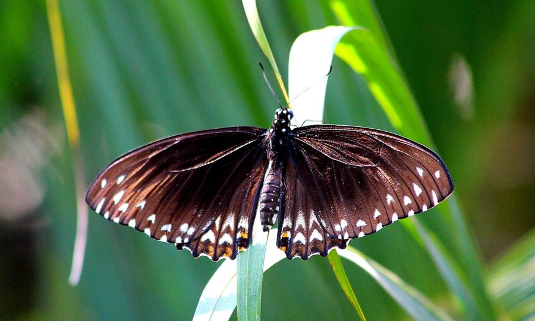

कॉमन माइम तितलीCommon Mime
Chilasa clytia · Papilionidae · INS-0305

- Scientific name वैज्ञानिक नाम
- Chilasa clytia (Linnaeus, 1758)
- Family कुल
- Papilionidae
- Hindi हिंदी
- कॉमन माइम तितली
- Local names स्थानीय नाम
- common mime, common mime titli
- Status here यहाँ की स्थिति
- native
- Movement आवागमन
- Resident, here all year
- Known from कहाँ दर्ज
- Others have published records from the wider Awadh–Purvanchal plain, none yet from Basti–Ayodhya अवध–पूर्वांचल से दूसरों के प्रकाशित अभिलेख, बस्ती–अयोध्या से अभी नहीं
- IUCN IUCN
- not evaluated
- Review समीक्षा
- not yet reviewed
When to look कब देखें
Present all year. साल भर मौजूद।
Tell it apart from इनसे अलग पहचानें
कॉमन माइम तितली / Common Mime
Chilasa clytia (Linnaeus, 1758) — Papilionidae
कॉमन माइम तितली — यह एक स्वेलोटेल तितली है जो दो अलग-अलग मुख्य रूपों में मिलती है और दूसरी तितलियों की नकल करती है। इसका गहरे भूरे-काले रंग वाला रूप कौआ तितली (Euploea) जैसा दिखता है, जबकि हल्का धारीदार रूप ब्लू टाइगर (Danaus / Tirumala) तितली जैसा दिखता है। इसके पिछले पंखों के निचले किनारे पर बड़े पीले धब्बों की कतार होती है।
Quick Identification त्वरित पहचान
| Feature | Description |
|---|---|
| Wingspan | 90–120 mm (Evans 1932, p. 47) |
| Form clytia (dark form) | Upperside velvety black or soft dark brown; forewing submarginal white spots with one spot shifted inwards; resembles Euploea (Talbot 1939) |
| Form dissimilis (pale form) | Ground-colour black with creamy-white stripes and spots; hindwing cell white with long discal white streaks; resembles Danaus (Talbot 1939) |
| Form panope & casyapa | panope: pale brown with merged apical spots forming large apical patches; casyapa: brown-black with two rows of discal patches on forewing (Talbot 1939) |
| Hindwing underside | Marginal row of comparatively large, very conspicuous yellow spots in both forms (Talbot 1939; Evans 1932, p. 47) |
| Resting posture | At rest, wings are held over the back like Euploea and Danaus, or sometimes in the horizontal Papilionid position (Talbot 1939, p. 115) |
Field tip: Look for a tailless swallowtail at puddles on sandy stream banks or flowers; despite mimicking Euploea or Danaus in flight and resting posture, it shows a prominent row of yellow marginal spots on the hindwing underside (Talbot 1939, pp. 115, 117; Evans 1932, p. 47).
हिंदी: इसके पंखों का फैलाव 90 से 120 मिमी होता है और इसमें पूँछ नहीं होती। इसके दो मुख्य रूप कौआ और टाइगर तितलियों की नकल करते हैं, लेकिन निचले पिछले पंख के किनारे बड़े पीले धब्बों की कतार से यह पहचानी जाती है।
Morphology आकारिकी
Biometrics (Evans 1932, p. 47):
| Measurement | Range |
|---|---|
| Expanse | 90–120 mm |
Talbot (1939, p. 114) states that Chilasa clytia "has two principal forms which are about equally common... The form clytia, with its variations, resembles species of Euploea, whilst the form dissimilis resembles various Danaus." Under the nominate subspecies, Talbot (1939, pp. 116–119) distinguishes six forms:
- Form clytia Linn.: "Upperside velvety black or soft dark brown. Fore wing submarginal white spots outwardly truncate or emarginate; the spot in area 4 shifted inwards out of line; those in areas 6, 7, and 8 oblique to the costa, the lowest and the upper two spots elongate... Hind wing with a discal series of inwardly conical and outwardly emarginate, triangular, white streaks in areas 1 to 5; a submarginal series of four white lunules in areas 2 to 5, in 6 and 7 a transverse oblong submarginal white spot; a prominent tornal yellow spot broadly divided across the middle by a bar of the ground-colour. Underside with ground-colour varying from soft pale brown to rich dark velvety brown... Hind wing with similar markings to those above, but with a marginal row of comparatively large, very conspicuous yellow spots; these are separated from the white lunules by a series of short transverse detached spots of the ground-colour." (Talbot 1939, pp. 116–117).
- Form casyapa Moore: "Upperside of fore wing brown-black, and beside the marginal spots has two rows of discal patches, of which the proximal ones are usually diffuse. Hind wing black-brown from the base to beyond apex of cell, post-discal sagittate spots, submarginal angular spots, and mostly yellow marginal ones." (Talbot 1939, p. 117).
- Form panope Linn.: "Ground-colour pale brown. Fore wing with a submarginal row of spots, and hind wing with shorter discal sagittate spots. Usually the marginal and submarginal spots of the fore wing are merged together, forming three large apical patches." (Talbot 1939, pp. 117–118).
- Form commixtus Roths.: "Fore wing brown-black with faint discal stripes and smaller spots before the outer margin. Hind wing with long discal internervular streaks, but the cell for the most part pure brown-black." (Talbot 1939, p. 118; Sikkim and Assam, very rare).
- Form dissimilis Linn.: "Ground-colour black with creamy-white stripes and spots. Upperside of fore wing with four cell-streaks coalescent at the base... Hind wing with the cell white; long discal white streaks that reach quite up to the outer margin of the cell... Underside similar to the upperside, the markings larger, and the hind wing with marginal yellow spots as in form clytia." (Talbot 1939, pp. 118–119).
- Form dissimillima Evans: "The pale markings are dusted with black and are more restricted." (Talbot 1939, p. 119; North-East India to Burma).
Larval Stage
Talbot (1939, p. 115, citing Bell) records the larva ("Velvety black or dark green, with a dorso-lateral row of carmine circular spots... Osmeterium light watery indigo-blue. Length 55 mm") and pupa ("Cylindrical, resembling a dead piece of stick broken off short at the top... Length, 38 mm. breadth, 8 mm.").
हिंदी: इसके clytia रूप का रंग गहरा मखमली काला या भूरा होता है, जबकि dissimilis रूप में काले पंखों पर क्रीमी-सफेद धारियाँ और धब्बे होते हैं। दोनों रूपों के पिछले पंख की निचली सतह पर किनारे की ओर चमकीले पीले धब्बे होते हैं।
Behaviour & Ecology व्यवहार और पारिस्थितिकी
Talbot (1939, p. 115) writes under Habits: "The butterfly is taken in large numbers at puddles on the sandy banks of streams, and also at flowers." He also notes: "In flight it can imitate the Euploea or Danais limniace, which it resembles, but can also fly very fast when alarmed. It is fond of circling round the tops of the hills or peaks in the jungle, well above the trees. The form dissimilis is occasionally present, but always in fewer numbers. At rest the wings are held over the back like the Euploea and Danaus, but sometimes assumes the ordinary horizontal Papilionid position."
हिंदी: टैलबोट (1939) के अनुसार यह नदी-नालों के रेतीले किनारों पर गड्ढों के पास और फूलों पर आती है। उड़ते समय यह Euploea या Danais limniace जैसी धीमी चाल की नकल कर सकती है, लेकिन डरने पर बहुत तेज उड़ती है।
Life Cycle / Phenology जीवन चक्र
Talbot (1939, p. 115, citing Bell) notes for Southern India: "It is very plentiful in the monsoon months and spends the dry months in the pupa; if the pupa is formed in November it very often does not produce a butterfly until the April or May following." Phenology in eastern Uttar Pradesh is not available in consulted sources.
हिंदी: बेल (टैलबोट 1939 में उद्धृत) के अनुसार दक्षिण भारत में यह बरसात में अधिक मिलती है और शुष्क महीने प्यूपा अवस्था में बिताती है। पूर्वी उत्तर प्रदेश का मौसमी चक्र देखे गए स्रोतों में उपलब्ध नहीं है।
Host Plants or Prey आहार
Talbot (1939, p. 115) states: "Feeds on various Laurineae (laurels, cinnamon, etc.)."
हिंदी: टैलबोट (1939) के अनुसार इसकी इल्ली लॉरेसी (Laurineae) कुल के पौधों, जैसे तेजपत्ता और दालचीनी आदि पर पलती है।
Predators / Natural Enemies शत्रु
Talbot (1939, p. 115, citing Bell) notes: "The full-grown larva does not seem to be much attacked by enemies; the young larva, however, is very liable to destruction, mostly, it is supposed, by spiders; it is certainly parasitised less than any other Papilio larva."
हिंदी: बेल (टैलबोट 1939 में उद्धृत) के अनुसार इसकी बड़ी इल्ली पर शत्रुओं का हमला कम होता है, लेकिन छोटी इल्ली को मकड़ियाँ अधिक नुकसान पहुँचाती हैं।
Agricultural / Human Relevance कृषि प्रासंगिकता
Not available in consulted sources.
हिंदी: इसके कृषि या मानव महत्व का विवरण देखे गए स्रोतों में उपलब्ध नहीं है।
Expected Locally स्थानीय रूप से अपेक्षित
Not a field record. Written from published accounts for eastern Uttar Pradesh. No confirmed local sighting yet — if you have seen it, that is what the atlas needs.
अभी तक स्थानीय पुष्टि नहीं। यह विवरण प्रकाशित स्रोतों से है, किसी अवलोकन से नहीं।
In eastern Uttar Pradesh, this butterfly may be looked for at damp puddles on sandy stream banks and at flowers (Talbot 1939, p. 115). GBIF holds published records from the wider Awadh–Purvanchal plain, none yet from Basti–Ayodhya: two photographed records from Lakhimpur Kheri on 15 April 2023 by two observers. A first local record would be a photograph showing either the dark or striped form together with the yellow marginal spots on the hindwing underside, with place and date, sent through the About page.
हिंदी: पूर्वी उत्तर प्रदेश में इसे नदियों के रेतीले किनारों और फूलों पर खोजा जा सकता है। जीबीआइएफ (GBIF) में लखीमपुर खीरी से 15 अप्रैल 2023 के दो अभिलेख हैं, पर बस्ती या अयोध्या से अभी कोई अभिलेख नहीं है।
Distribution वितरण
Global range: Talbot (1939, p. 115) gives: "China, Formosa, and Hainan to the Malay Peninsula; also in Palawan, the Philippines, and islands of the Timor group."
In India: Evans (1932, p. 47) gives "India" for clytia clytia and "S. India — N.W. Himalayas" for form dissimilis; Talbot (1939, pp. 117–119) records northern India for form panope and Southern India to the North-West Himalayas for form dissimilis.
In Uttar Pradesh: GBIF holds two photographed records from Lakhimpur Kheri on 15 April 2023 by two observers.
In Basti district / eastern UP: GBIF holds no record from Basti or Ayodhya.
हिंदी: यह तितली भारत सहित चीन, ताइवान, मलय प्रायद्वीप और फिलीपींस तक पाई जाती है। उत्तर प्रदेश में जीबीआइएफ पर लखीमपुर खीरी के दो अभिलेख हैं, पर बस्ती और अयोध्या से कोई अभिलेख नहीं है।
Research Questions शोध प्रश्न
Anyone can investigate these | कोई भी इन प्रश्नों की जाँच कर सकता है
- Does Chilasa clytia occur in Basti and Ayodhya districts, and which form (clytia or dissimilis) is more frequent? / क्या बस्ती और अयोध्या में कॉमन माइम तितली मिलती है और इसका कौन सा रूप अधिक दिखता है?
- At which flowers or damp stream banks are adults observed in the Awadh plain? / अवध के मैदान में यह किन फूलों या गीले किनारों पर देखी जाती है?
- Do both forms rest with wings held upright like Euploea and Danaus, or spread horizontally?
- Which local Lauraceae trees serve as larval food plants in northern Uttar Pradesh?
- Can a child tell a Common Mime apart from a Common Indian Crow or Blue Tiger by looking for the row of yellow spots along the edge of the hindwing underside? (No equipment needed.)
हिंदी: कोई भी व्यक्ति बिना किसी उपकरण के इसके निचले पिछले पंख के किनारे पर पीले धब्बों की कतार देखकर इसे कौआ या ब्लू टाइगर तितली से अलग पहचान सकता है।
Similar Species मिलती-जुलती प्रजातियाँ
| Species | How to tell apart | हिंदी |
|---|---|---|
| Common Indian Crow (Euploea core) | Model for form clytia, which resembles species of Euploea (Talbot 1939, p. 114); C. clytia is distinguished by its prominent row of yellow marginal spots on the hindwing underside (Talbot 1939, p. 117) | रूप clytia इसकी नकल करता है; कॉमन माइम की पहचान निचले पिछले पंख के किनारे बड़े पीले धब्बों से होती है (कौआ तितली) |
| Blue Tiger (Tirumala limniace) | Model for form dissimilis (Talbot 1939, p. 115, as Danais limniace); C. clytia shows marginal yellow spots on the hindwing underside (Talbot 1939, p. 119) | रूप dissimilis इसकी नकल करता है; कॉमन माइम की निचली सतह पर किनारे पीले धब्बे होते हैं (ब्लू टाइगर तितली) |
Field rule: A tailless butterfly resembling a Euploea crow or Tirumala tiger in flight, but showing a prominent row of yellow marginal spots on the hindwing underside, is Chilasa clytia (Talbot 1939, pp. 115, 117; Evans 1932, p. 47).
हिंदी: कौआ या ब्लू टाइगर जैसी दिखने वाली तितली जिसके निचले पिछले पंख के किनारे बड़े पीले धब्बों की कतार हो, वह कॉमन माइम तितली है।
Taxonomy & Classification वर्गीकरण
Original description. Linnaeus, C. (1758). Systema Naturae, 10th ed., p. 479, as Papilio clytia (cited in Talbot 1939, p. 116; Bingham 1907, p. 75).
Subspecies. Talbot (1939, p. 115) notes four subspecies in the Indian area, with the nominate subspecies (clytia) occurring in mainland India (Evans 1932, p. 47).
Family and order placement. Order Lepidoptera, family Papilionidae, genus Chilasa. Bingham (1907, p. 75) treated it as Papilio clytia.
Phylogenetic notes. Placed in Chilasa by Talbot (1939, p. 114), Evans (1932, p. 47), and GBIF.
IUCN status rationale. Not evaluated on the IUCN Red List.
हिंदी: इसका पहला वैज्ञानिक वर्णन लिनियस (1758) ने Papilio clytia के रूप में किया था। वर्तमान में इसे Chilasa वंश और Papilionidae कुल में रखा जाता है।
Photo Gallery फोटो गैलरी
No photos yet — add field photos to media/species/common_mime/ and run node scripts/sync_photos.js.
Photos needed आवश्यक फोटो
- [ ] Dark form (clytia) and pale striped form (dissimilis) (गहरा clytia रूप और धारीदार dissimilis रूप)
- [ ] Underside showing the marginal row of yellow spots on the hindwing (निचली सतह के पीले धब्बे दिखाता चित्र)
References संदर्भ
- Linnaeus, C. (1758). Systema Naturae per Regna Tria Naturae (10th ed.), p. 479. Laurentii Salvii, Holmiae. [original description, cited via Talbot 1939 and Bingham 1907]
- Bingham, C. T. (1907). The Fauna of British India, including Ceylon and Burma. Butterflies. Vol. 2 (as Papilio clytia, pp. 75–78). Taylor and Francis, London.
- Evans, W. H. (1932). The Identification of Indian Butterflies (2nd ed., p. 47). Bombay Natural History Society, Madras.
- Talbot, G. (1939). The Fauna of British India, including Ceylon and Burma. Butterflies. Vol. 1 (2nd ed., pp. 114–119). Taylor and Francis, London.
- GBIF Occurrence Data — Chilasa clytia (Linnaeus, 1758), India (2025).
Source file: species/fauna/insects/common_mime.md